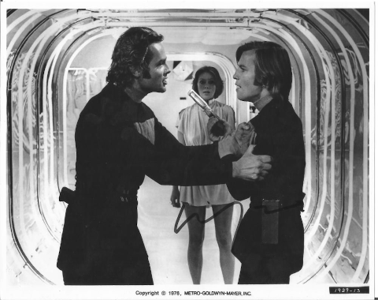

Nano-Blog
This is the most recent content on Meadhbh's Nano-Blog. View the Chronological Index to find a list of nano-blog entries sorted by date. View the Hashtag Index to find entries sorted by hashtag.
February 28th, 2024 [Wednesday]
I recently spotted this link on Hacker News: Porting Sweet 16 by Carsten Strotmann. "Sweet 16" is a virtual machine developed by Steve Wozniak to make working with 16-bit values on the 8-bit Apple II a bit easier. Wozniak authored a pair of articles for Byte Magazine in 1977 describing the Apple II and the Sweet 16 meta-processor:
- The Apple II [BYTE, May 1977]
- SWEET16: The 6502 Dream Machine [BYTE, November 1977]
In 1985, Todd Rundgren's A Cappella was my favourite album. Using only his voice and a sampling synthesizer, he crafted a work emotional depth and technical mastery. Rundgren recently sat down to talk about the album and it's production with Gregg Bendian, Andre Cholmondeley and Anthony Garone. #music [permalink]
May 24th, 2022 [Wednesday]
As I age I become nostalgic for 80s media. I ran across this short film on the youtubes. Betaville, clearly a pleasant take-off on Godard's Alphaville. Which reminds me; I need to rewatch Alphaville sometime. #cinema [permalink]
Eagle-eyed viewers of Betaville (referenced above) will note the neon tunnel from 127 John St. — itself a popular location for photography and film projects. Fortunately someone thought to write a few paragraphs about this location: Flaming Pablum: Walk Into the Light. #architecture [permalink]
All my life I thought this scene from Logan's Run was shot at 127 John St., but on closer inspection, I think it could be a reconstruction. What's cheaper? Fly a second unit to NYC for a single shot or re-create it in D/FW or Culver City? #scifi [permalink]
Mathieu Dejean interviews Alain Badiou regarding Emmanuel Macron and the degree to which modern politicians are human or fetishes for the ideal of freedom and agency. Worth a read and includes this marvelous quote:
Macron is the name of a crisis of any politics that purports to "represent" political orientations in an electoral space. That clearly owes to the fact that the earthly disappearance of the communist hypothesis and its parties has little by little made the truth about parliamentarism apparent: namely, that ultimately it only "represents" small nuances in the dominant consensus around neoliberal capitalism – and not any alternative strategy. The far Right, in the brutal style of Donald Trump or the renovated Pétainism of Marine Le Pen, profits from this situation, since although it stands totally within that consensus it is alone in giving off the appearance of being on the outside.
Badiou: Macron is the Name of a Crisis #politics [permalink]